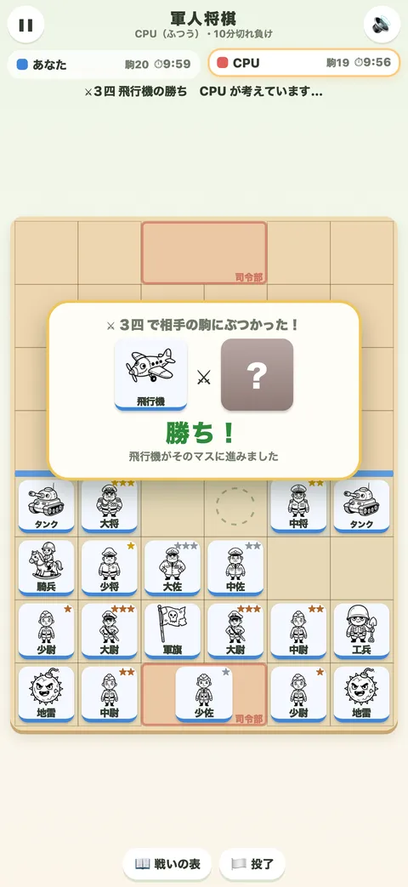
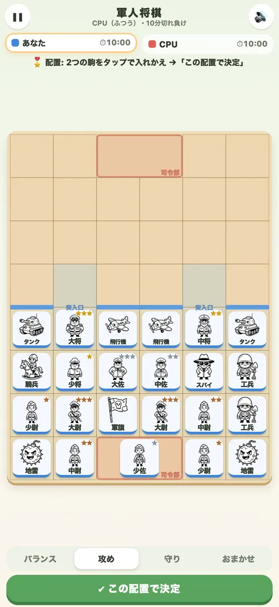
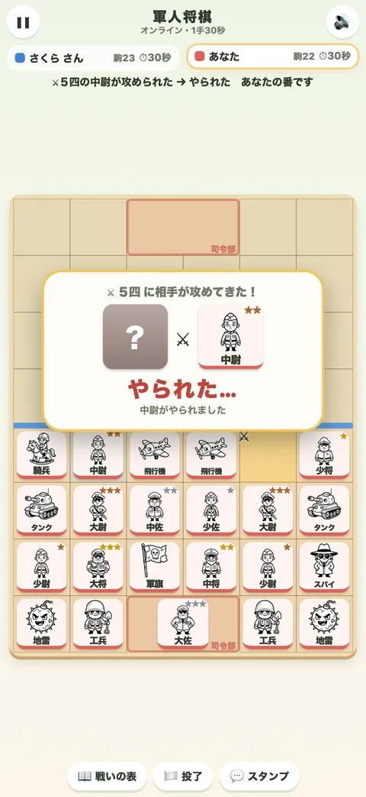
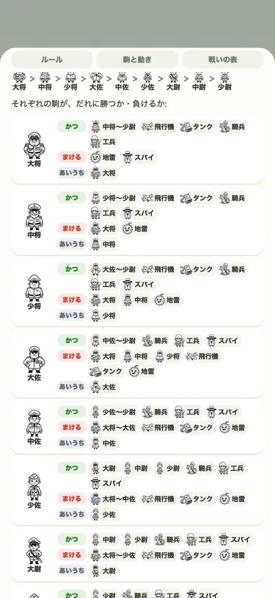
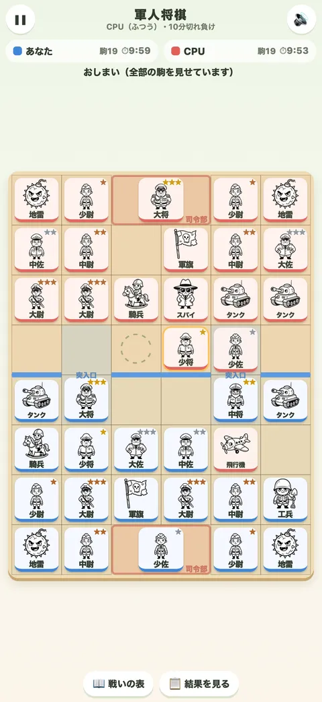

審判いらずの軍人将棋（iPhone）
軍人将棋オンライン
相手の駒は、見えない。
ぶつかって読み合う心理戦。
軍人将棋は、相手の駒が何かわからないまま戦うボードゲーム。ふつうは審判が要りますが、このアプリではアプリが審判です。ぶつかった駒の勝ち負けだけがわかるので、そこから相手の配置を読みましょう。
App Store で近日公開無料・広告あり／iPhone（iOS 18 以降）


アプリの画面
軍人将棋オンラインとは？
軍人将棋オンラインは、相手の駒は種類も場所も見えない軍人将棋。アプリが審判になって、ぶつかった駒の勝ち負けだけを知らせます。23枚・8×6の盤。CPU（3段階）・2人で1台・部屋のコードで友達とネット対戦。無料（広告あり）のiPhoneアプリ。
- 料金無料・広告あり
- 対応iPhone（iOS 18 以降）
- ジャンル対戦





部屋のコードで、友達とネット対戦
- 登録・ログイン不要部屋をつくると一覧に出ます。入室のリクエストを「許可」すると対局スタート。非公開の部屋は6文字のコードで招待。
- 持ち時間を選べる3分切れ負け・10分切れ負け・1手10秒・5分＋5秒・1手30秒の5つ。配置のあいだは時計が止まります。
- スタンプで あいさつ対局中は決まったスタンプだけ。自由な文字は送れません。いやな名前は非表示にできます。
CPU は よわい・ふつう・つよい の3段階。CPU に見えるのも自分の駒と戦いの結果だけで、ずるはしません。
こんな人におすすめ
- 軍人将棋を遊んだことがあって、審判なしで遊びたい人
- 相手の手を読む心理戦が好きな人
- 将棋とはちがうボードゲームを友達と遊びたい人
遊び方は3ステップ
- 配置する23枚の駒を自分の陣にならべます。お手本（バランス・攻め・守り・おまかせ）から選んで、2枚タップで入れかえ。
- 動かす駒はふつう前後左右に1マス。タンク・騎兵・工兵・飛行機は、もっと遠くまで動けます。
- ぶつかる相手の駒にぶつかると戦い。わかるのは勝ち・負け・相打ちだけ。相手の司令部に佐官以上が入れば勝ち。
ルール
相手の駒は見えない
盤に出るのは自分の駒だけ。相手の駒の種類も場所もわかりません。アプリが審判になって、戦いの結果だけを知らせます。
ぶつかったら戦い
動いた先や途中に相手の駒がいたら、そこで戦い。強いほうが残り、同じ強さなら両方消えます。わかるのは勝ち・負け・相打ちだけ。
強さのきまり
将校は 大将＞中将＞少将＞大佐＞中佐＞少佐＞大尉＞中尉＞少尉。ただしスパイは大将に勝ち、地雷は飛行機と工兵にしか負けません。戦いの表でいつでも確かめられます。
司令部をとったら勝ち
相手の司令部に大将〜少佐が入るか、相手が動かせる駒がなくなったら勝ち。
特徴
- 23枚の駒大将から軍旗まで16種類
- 8×6の盤突入口は2か所
- 3段階の CPUよわい・ふつう・つよい
- 5つの持ち時間ネット対戦で選べる
軍人将棋オンライン を無料で遊んでみる
App Store で近日公開無料・広告あり／iPhone（iOS 18 以降）
くわしい遊び方
23枚の駒を自分の陣にならべてから、交互に駒を動かします。相手の駒は種類も場所も見えません。相手の駒にぶつかると戦いになり、アプリが審判になって、勝ち・負け・相打ちだけを知らせます。相手の司令部に大将〜少佐が入るか、相手が動かせる駒がなくなったら勝ちです。
- 盤：よこ6・たて8。自分の陣と相手の陣のあいだは、左から2列目と5列目の「突入口」だけ通れます（飛行機はどこでも）
- 駒：大将・中将・少将・大佐・中佐・少佐・大尉・中尉・少尉・飛行機・タンク・騎兵・工兵・地雷・スパイ・軍旗の23枚。駒ごとの勝ち負けは「戦いの表」で見られます
- モード：CPU 対戦（よわい・ふつう・つよい）／2人で1台（交代の画面をはさみます）／オンライン対戦（部屋をつくって待つ・待っている部屋に入室をリクエスト・非公開の部屋は6文字のコード）
よくある質問
審判なしで軍人将棋を遊べるアプリは？
軍人将棋オンラインでは、アプリが審判になります。相手の駒は種類も場所も見えず、ぶつかったときの勝ち・負け・相打ちだけが知らされます。CPU（3段階）・2人で1台・ネット対戦で遊べます。
無料ですか？
はい、無料でダウンロードして遊べます（広告あり）。App Store で近日公開です。
どの端末で使えますか？
iPhone（iOS 18 以降）で使えます。Android 版はありません。
オンライン対戦のやり方
1人が「オンライン対戦」→「部屋をつくる」を押します。もう1人の「待っている部屋」の一覧に部屋が出るので、押して入室をリクエストします。部屋をつくった人が「許可」すると始まります。「非公開」にした部屋は一覧に出ないので、6文字のコードを送って、相手に「入る」で入ってもらいます。登録やログインはいりません。
入室のリクエストに返事がない・部屋が見つからない
部屋をつくった人がアプリを閉じたか、コードがまちがっている可能性があります。部屋をつくった人の画面が開いたままになっているか確かめて、もう一度ためしてください。リクエストは30秒たつと自動でおことわりになります。
対局中に相手の接続が切れた
しばらく待つと、つながり直したところから続きます。60秒たっても相手がもどらないときは「相手がもどってきません」と出ます。待つか、部屋を出てください（部屋を出たときは成績に入りません）。
いやな名前の人がいた
相手の名前を「非表示」にすると、その人の名前と部屋は、あなたの iPhone では出なくなります。相手のスタンプを表示しないスイッチもあります。
CPU は相手の駒を見ていますか？
いいえ。CPU に見えるのも、自分の駒と戦いの結果だけです。
駒の強さがわからない
「あそびかた」の「戦いの表」に、駒ごとに勝つ相手・負ける相手・相打ちの相手を絵つきでまとめています。対局中も「戦いの表」のボタンで開けます。
音や振動を止めたい
タイトル画面の「音」「ぶるぶる」で、オン・オフを切り替えられます。
成績を消したい
成績や名前は、この iPhone の中にだけ保存しています。アプリを削除すると成績も消えます。
お問い合わせ
不具合やご要望は、メールでお知らせください。お使いの iPhone の機種と iOS のバージョンを書いていただけると助かります。